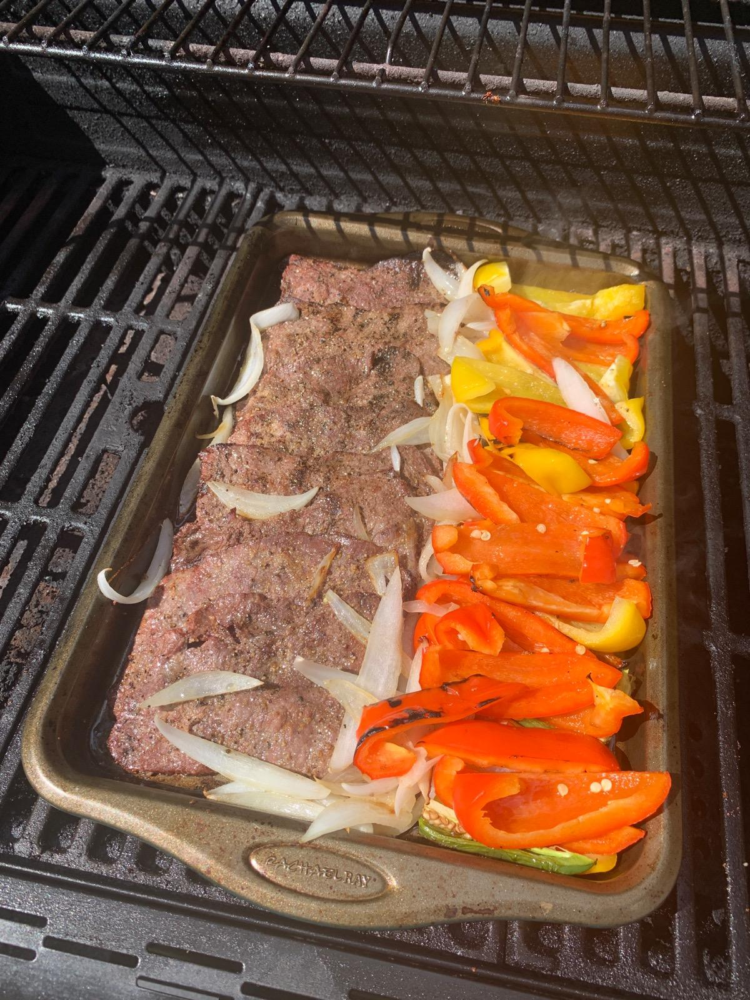

Fajitas

These are the fajitas we usually make on these trips. We like to grill our fajitas so if you have one available that's a plus.
Here are the ingredients and steps
- Thin steaks
- Bell peppers
- Onions
- Olive oil
- Garlic
- Salt
- Pepper
- Fresh Tortillas
- Shredded Cheddar
- Lettuce
- tomatos
- guacomole
After you've gathered your ingredients here are the steps to prepare and cook the food
- Cut your peppers and tomatos into strips
-
optional cut your thin steaks into strips
- Combine salt pepper garlic powder and any other seasoning you have into olive oil
- Dip thin steaks in the solution you have created
- leave on grill for 15-20 minutes or until thoroughly cooked
- Remove from grill and serve with tortillas and toppings